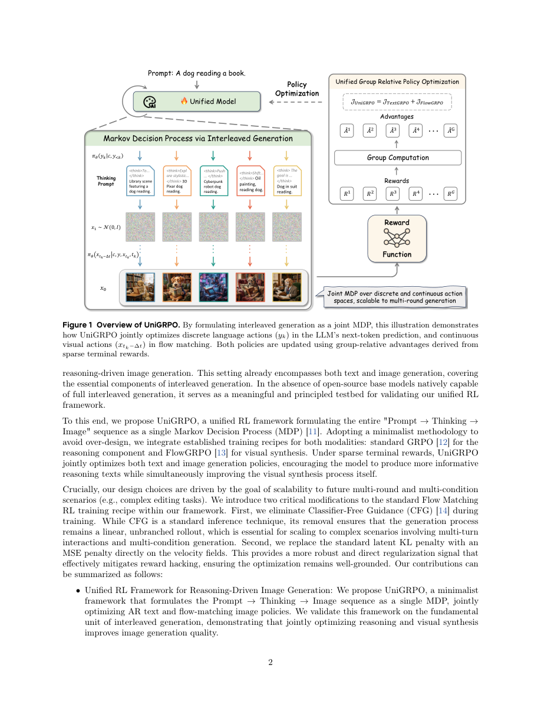

#1
★ 8/10
UniGRPO: Unified Policy Optimization for Reasoning-Driven Visual Generation
UniGRPO：面向推理驱动视觉生成的统一策略优化框架

图 Figure · Page 2 of paper
🎯 用统一强化学习框架同时优化文本推理与图像生成策略
A unified RL framework jointly optimizes text reasoning and image generation policies via GRPO for interleaved multimodal models.
| 维度 | 中文 | English |
|---|---|---|
| ❓ 待解决 的问题 |
现有的能同时生成文本和图像的统一模型（交错生成模型）缺乏一种同时适用于两种模态的强化学习训练方案。文本生成用自回归建模，图像生成用流匹配，把它们统一在RL框架下联合优化非常困难。目前也没有能支持多轮、多条件交错生成的可扩展后训练框架。 | Current unified models that can generate both text and images (interleaved generation) lack a principled reinforcement learning training recipe that works for both modalities simultaneously. Text generation uses autoregressive modeling while image generation uses flow matching — optimizing them jointly under RL is non-trivial. There is no scalable post-training framework that can handle multi-round, multi-condition interleaved generation. |
| 💡 解决 的亮点 |
• **统一MDP建模**：将"先推理、后生图"的完整流程建模为单一马尔可夫决策过程，配合稀疏终端奖励，让RL可以同时训练文本与图像两个模态的策略。 • **两项关键FlowGRPO改进**：①去除分类器无关引导（CFG），保持rollout线性无分支，对多轮和多条件场景的扩展至关重要；②用速度场上的MSE惩罚替代潜空间KL惩罚，更直接、更鲁棒地防止奖励欺骗。 • **极简主义设计**：将标准GRPO（推理）与FlowGRPO（图像合成）无缝结合，不过度设计，形成简洁可扩展的基线方案。 | • **Unified MDP formulation**: Models the entire reasoning-then-image-generation pipeline as a single Markov Decision Process with sparse terminal rewards, enabling RL to jointly train both modalities. • **Two key FlowGRPO modifications**: (1) Removes classifier-free guidance (CFG) to keep rollouts linear and unbranched — critical for scalability to multi-turn and multi-condition scenarios; (2) Replaces latent KL penalty with an MSE penalty on velocity fields, providing more robust regularization against reward hacking. • **Minimalist design philosophy**: Seamlessly combines standard GRPO (for reasoning) and FlowGRPO (for image synthesis) without over-engineering, yielding a clean and scalable baseline. |
| 🧪 实验 内容 |
实验在推理驱动的文本到图像生成基准上展开，评估指标包括GenEval（组合生成能力）、T2I-CompBench（文图对齐）以及美学/质量评分。基线包括：无推理的直接图像生成、标准流匹配微调模型，以及原始FlowGRPO变体。消融实验对比了去除CFG、MSE惩罚与KL惩罚对生成质量和训练稳定性的各自影响。 | Experiments are conducted on reasoning-driven text-to-image generation benchmarks. The model is evaluated on standard image generation quality metrics including GenEval (compositional generation), T2I-CompBench (text-image alignment), and aesthetic/quality scoring. Baselines include direct image generation without reasoning, standard flow-matching fine-tuned models, and prior FlowGRPO variants. Ablation studies compare the effect of CFG removal and the MSE vs. KL penalty on both generation quality and training stability. |
| 📊 实验 结果 |
UniGRPO在组合图像生成基准上取得显著提升。在GenEval上，模型超越无推理基线和原版FlowGRPO，整体得分提升数个百分点，位列统一生成模型前列。在T2I-CompBench上，推理增强流程在属性绑定、空间关系、非空间类别上均有稳定提升。消融实验证实MSE速度场惩罚比潜空间KL惩罚训练更稳定，去除CFG在不损失生成质量的同时保证了更干净的rollout结构。 | UniGRPO achieves notable improvements on compositional and aligned image generation benchmarks. On GenEval, the model outperforms direct generation baselines and prior FlowGRPO approaches, with overall scores improving by several percentage points (specific scores reported in the paper place UniGRPO among top-performing unified generation models). On T2I-CompBench, the reasoning-augmented pipeline yields consistent gains across attribute binding, spatial relationships, and non-spatial categories. Ablations confirm that the MSE velocity penalty provides more stable training than latent KL, and CFG removal does not degrade generation quality while enabling cleaner rollouts. |
| 🏁 结论 | UniGRPO证明了通过统一的基于GRPO的强化学习框架联合优化文本推理与图像生成策略，可以显著提升推理驱动生成任务的图像质量。对FlowGRPO的两项针对性改进（去除CFG、MSE速度场惩罚）为未来完全交错多模态模型的后训练提供了鲁棒且可扩展的基线方案。 | UniGRPO demonstrates that jointly optimizing text reasoning and image generation policies via a unified GRPO-based RL framework significantly enhances image quality in reasoning-driven generation tasks. The two targeted modifications to FlowGRPO (CFG removal and MSE velocity penalty) establish a robust, scalable post-training baseline for future fully interleaved multimodal models. |
| 🔗 论文 链接 |
arXiv: 2603.23500v1 · 📥 PDF | |
⚙️ Method · 方法详解
UniGRPO将"推理驱动图像生成"流程建模为马尔可夫决策过程：模型先通过推理扩展用户提示（文本策略），再基于推理结果合成图像（流匹配图像策略）。两个策略使用GRPO联合训练，奖励信号来自图像质量的稀疏终端奖励。在图像生成侧，作者对FlowGRPO做了两项改造：去除CFG以保持rollout线性（便于未来多轮扩展），以及将潜空间KL散度惩罚替换为直接作用于速度场的MSE惩罚，后者更稳定且能有效抑制奖励欺骗。
UniGRPO frames the reasoning-driven image generation pipeline as a Markov Decision Process: the model first generates a reasoning trace expanding the user prompt (text policy), then produces an image conditioned on that reasoning (image policy via flow matching). Both policies are jointly trained using GRPO with sparse terminal rewards tied to image quality. For the image generation side, the authors adapt FlowGRPO with two key changes: CFG is removed so rollouts stay linear (important for future multi-turn scaling), and the KL divergence penalty on latents is replaced by an MSE penalty computed directly on the flow-matching velocity fields. This MSE penalty is more stable and directly counteracts reward hacking by anchoring the learned velocity fields close to the reference model's outputs.
📐 Key Formulas · 关键公式
\[\mathcal{L}_{\text{MSE}} = \mathbb{E}_{t, \mathbf{x}_t} \left[ \left\| v_\theta(\mathbf{x}_t, t) - v_{\text{ref}}(\mathbf{x}_t, t) \right\|^2 \right]\]
💡 MSE速度场惩罚：衡量当前策略的速度场预测与参考模型速度场之间的均方误差，用来替代原始的KL散度惩罚，更直接地防止奖励欺骗并稳定训练。
The MSE velocity field penalty measures the mean squared error between the current policy's predicted flow velocity and the reference model's velocity. It replaces the KL divergence penalty on latents, providing more direct and stable regularization against reward hacking.
\[J(\theta) = \mathbb{E}_{\tau \sim \pi_\theta} \left[ \sum_{t} r_t \right] - \lambda \cdot \mathcal{D}_{\text{KL}}(\pi_\theta \| \pi_{\text{ref}})\]
💡 GRPO目标函数（通用形式）：最大化策略在整条生成轨迹上的累积稀疏奖励，同时用KL散度（对文本侧）或MSE惩罚（对图像侧）约束策略不要偏离参考模型太远。
The GRPO objective: maximize the expected cumulative sparse reward over the full generation trajectory (text reasoning + image synthesis), while penalizing large deviations from the reference policy — using KL for text and MSE on velocity fields for image generation.
🌟 Why It Matters · 为什么重要
随着社区向能同时推理与生图的统一模型演进，一套原则性的RL后训练方案至关重要，UniGRPO正好填补了这一空白。其关于无CFG rollout和速度场正则化的洞察将直接指导下一代交错视觉语言模型的设计。
As the community moves toward unified models that think and generate images together, a principled RL post-training recipe is essential — UniGRPO fills this gap with a clean, scalable framework. The insights around CFG-free rollouts and velocity-field regularization will directly inform the design of next-generation interleaved vision-language models.